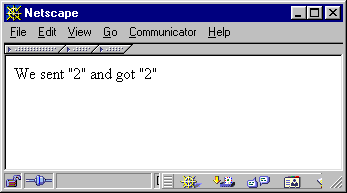

| ||||||
|
| ||||||
Глава 30. Использование расширений
В зависимости от избранного вами процесса построения/build, вы должны либо
выполнить ваш новый исполняемый PHP как связанный с вашим Web-сервером (или
запускать как CGI), либо как файл .so (shared object/совместно используемого
объекта). Если вы скомпилировали файл примера first_module.c как shared object, ваш результирующий файл должен быть
first_module.so. Для его использования вы должны сначала скопировать его в место, из которого
он доступен для PHP. Для простого тестирования вы можете скопировать его в вашу директорию htdocs
и испытать его с исходником из Листинга 9.4.
Если вы скомпилировали его в исполняемый файл PHP,
исключите вызов dl(), так как функциональность модуля постоянно
доступна вашим скриптам.
| Предупреждение! |
|---|
|
Из соображений безопасности вы не должны помещать ваши динамические модули в публично доступные директории. Хотя это и возможно и упрощает тестирование, вы должны помещать эти модули в отдельную директорию в рабочей среде. |
Рисунок 30-1. Листинг 9.4. Тестовый файл для first_module.so
<?php
//dl("first_module.so");
$param = 2;
$return = first_module($param);
print("We sent \"$param\" and got \"$return\"");
?> |
Вызов этого PHP-файла в вашем Web-браузере должен дать вывод, показанный на Рисунке 9.3.
Рисунок 30-2. Рисунок 9.3. Вывод first_module.php.

Если необходимо, динамически загружаемый модуль загружается с помощью вызова функции dl(). Эта функция ищет специфицированный совместно используемый/shared объект, загружает его и делает его функциональность доступной для PHP. Этот модуль экспортирует функцию first_module(), которая принимает единственный параметр, конвертирует его в integer и возвращает результат конвертации.
Если у вас всё получилось, наши поздравления! Вы построили ваше первое расширение PHP.
|
| ||||||
|